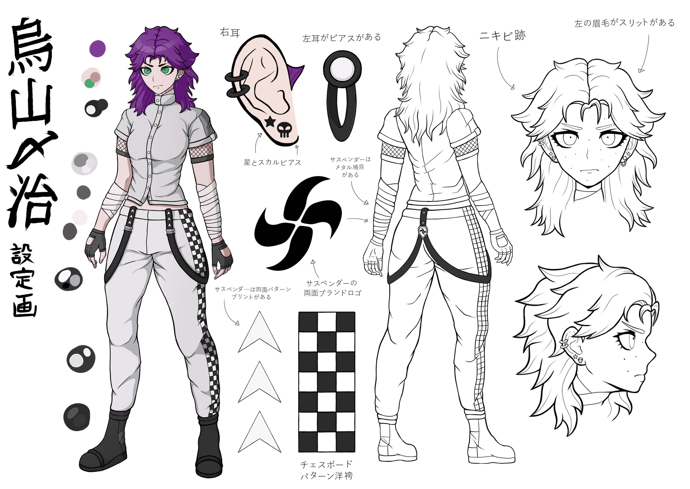
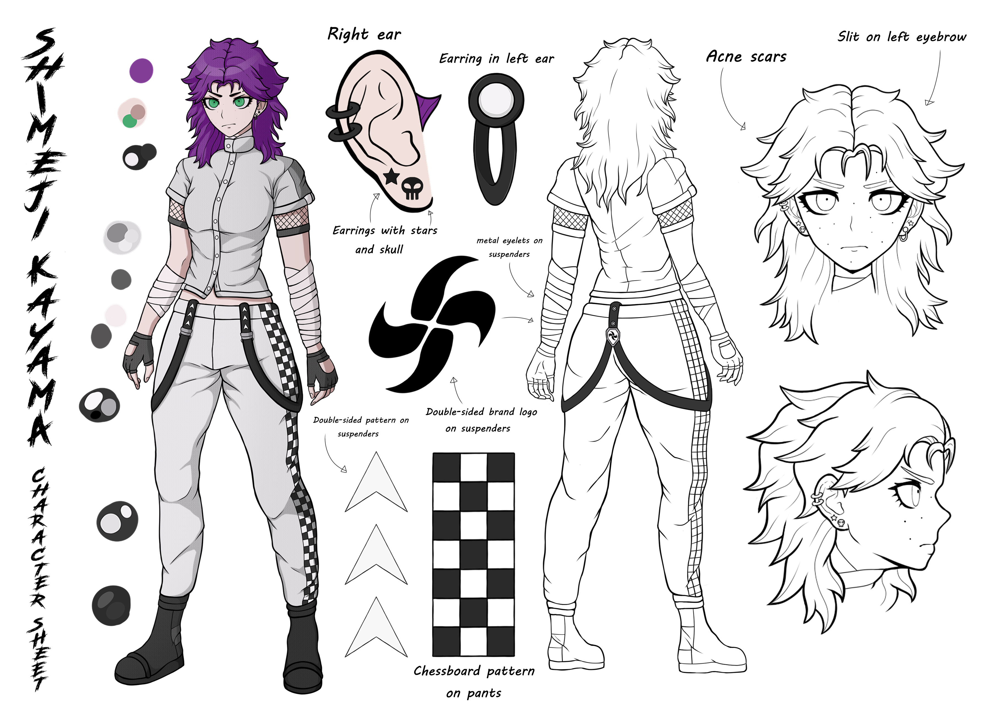

THIS PAGE CONTAINS SPOILERS FOR ALL DANGANRONPA SERIES!
Appearance
Kayama is a tall girl with pale skin and intensive green eyes. She has
a purple hair, arranged in rather chaotic way. Her eyebrows are dark,
and expressive, and she has a little slit on left eyebrow. On her face
there are acne scars that look like freckles.
Usually she wears a gray shirt with collar fastened with white
buttons. Her shirt doesn't fit her waist, so the fabric is arranged in
a strange way. As Ultimate Car Racer, she wear a ligt-gray pants with
a chessboard on both sides. Her pants have suspenders with white
arrows pattern sewn to it and have the brand's logo with metal eyelets
on the back. Her dark-gray shoes are typically adapted for driving.
She has leather gloves on her hands and black fishnet from under her
shirt sleeves. Kayama's ears are decorated with various gray jewerly.
On her right side she has a skull and double helix piercing, while on
her left she has circle shape with ring earring. On both earlobe she
has a small stars earrings too. Due to her clumsiness and the fresh
scars she acquired during racing tournaments, she wears bandages on
arms and neck.
 
Thanks to Yurichamadayo for translating the Character Sheet into Japanese as kanji!